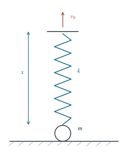

P0062 · 出版物习题 · 原书第 1.27 题
匀速拉伸竖直弹簧的外力功
小球初在桌面，弹簧上端匀速上拉；求从自然长度到第一次最大伸长期间外力的总功。
1 题目
1.1 物理情境
质量为 的小球静置于水平桌面，一根劲度系数为 的轻质弹簧竖直连接小球和其上方的可牵引端。初始弹簧为自然长度。
1.2 物理过程
自 起，外力使弹簧上端以恒定速度 竖直上升。起初小球仍接触桌面；脱离桌面后继续运动，直到弹簧伸长量第一次达到极大值。
1.3 已知参数和理想化假设
弹簧质量忽略且满足胡克定律，桌面光滑，空气阻力忽略，重力加速度为 。牵引端的外力大小即时等于弹簧张力。
1.4 求解目标
求外力从开始上拉到首次最大伸长期间对弹簧上端所做的总功 。

力学推导以弹簧的伸长量为主变量；图中的两个状态只表示先后顺序。
2 思路与提示
先找小球离桌的瞬间。之后随弹簧上端匀速平移的参考系仍是惯性系，可在其中判断第一次最大伸长发生的时刻。
3 解答展开 / 收起
3.1 确定脱离桌面的时刻
以 表示弹簧伸长量。小球尚未脱离桌面时静止，故 。桌面对小球的支持力为 ；支持力第一次降至零时，得到
在这一阶段，牵引端位移与弹簧伸长相同，外力做功为
3.2 脱离后用随上端平移的惯性系
令 、，并定义相对平衡伸长量 。弹簧上端匀速上升，所随参考系仍为惯性系。小球脱离桌面的瞬间在地面系速度为零，因此 ，而 。
设小球离桌面的高度为 ；因为上端以 上升，有 。小球满足 ，于是
解初值问题可得
第一次为零是在四分之一周期后；那时伸长量达到首次极大值：
3.3 积分牵引端的力与位移
脱离桌面后，上端每单位时间上升 ，外力大小为 。结合第（2）、（4）、（5）式，总功为
作为能量核对，首次最大伸长时小球上升了 ，其地面系速度为 ；因此 ，与第（6）式相同。
4 方法与讨论
“最大伸长”表示弹簧上下端的相对速度瞬时为零，小球此刻在地面系仍以 上升。把它误当作小球停止，会在功与能计算中遗漏末态动能。